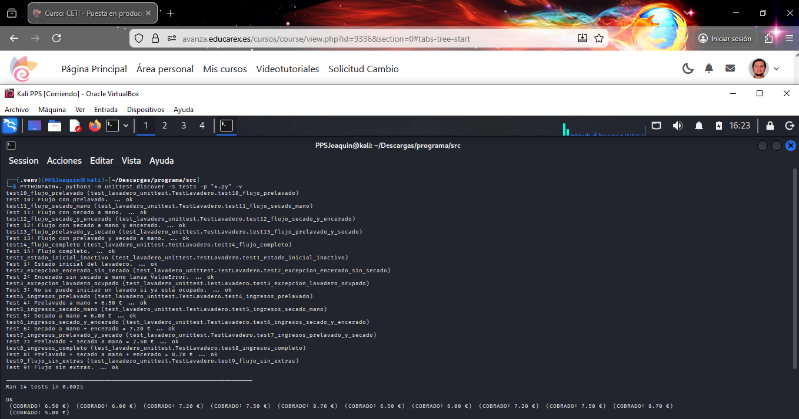

3. Pruebas unitarias y corrección del código de la aplicación¶
En este apartado se documenta de forma detallada el proceso completo de ejecución de pruebas unitarias, detección de errores, análisis de fallos y corrección del código de la aplicación del lavadero.
Se hacen uso de pruebas automáticas como mecanismo de control de calidad y detección temprana de errores antes del despliegue de una aplicación.
3.1 Entorno de pruebas¶
Las pruebas se han realizado en el siguiente entorno:
- Sistema operativo: Kali Linux
- Lenguaje: Python 3
- Framework de testing: unittest
- Entorno virtual:
.venv - Editor / IDE: Visual Studio Code
- Terminal: Bash
Archivo de pruebas unitarias:
test_lavadero_unittest.py
Archivo de la aplicación corregido:
lavadero.py
3.2 Ejecución de las pruebas unitarias¶
Las pruebas se ejecutan desde terminal utilizando el descubrimiento automático de tests:
PYTHONPATH=. python3 -m unittest discover -s tests -p "*.py" -v
El parámetro -v (verbose) permite visualizar el resultado detallado de cada prueba, facilitando el análisis de errores.
3.3 Tipos de pruebas realizadas¶
Test 1 – Estado inicial¶
Comprueba que al crear un lavadero:
- Fase = 0 (Inactivo)
- No está ocupado
- Ingresos = 0 €
- Todas las opciones a False
Tests 2 y 3 – Reglas de negocio¶
Verifican que:
- No se puede encerar sin secado a mano (ValueError)
- No se puede iniciar un lavado si el lavadero está ocupado (RuntimeError)
Tests 4 a 8 – Cálculo de ingresos¶
Comprueban que los ingresos coinciden exactamente con los valores del enunciado:
| Opción | Ingresos |
|---|---|
| Prelavado | 6,50 € |
| Secado a mano | 6,00 € |
| Secado + encerado | 7,20 € |
| Prelavado + secado | 7,50 € |
| Lavado completo | 8,70 € |
Tests 9 a 14 – Flujo de fases¶
Comprueban que el lavadero pasa por las fases correctas según las opciones seleccionadas.
Ejemplo:
[0, 1, 3, 4, 5, 6, 0]
3.4 Resultados iniciales: detección de errores¶
En la primera ejecución de las pruebas sobre el código original de lavadero.py, se detectaron múltiples errores y fallos.
Capturas de la ejecución con errores


Salida completa de la ejecución con errores:
┌──(.venv)(PPSJoaquin㉿kali)-[~/Descargas/programa/src]
└─$ PYTHONPATH=. python3 -m unittest discover -s tests -p "*.py" -v
test10_flujo_prelavado (test_lavadero_unittest.TestLavadero.test10_flujo_prelavado)
Test 10: Flujo con prelavado. ... ERROR
test11_flujo_secado_mano (test_lavadero_unittest.TestLavadero.test11_flujo_secado_mano)
Test 11: Flujo con secado a mano. ... ERROR
test12_flujo_secado_y_encerado (test_lavadero_unittest.TestLavadero.test12_flujo_secado_y_encerado)
Test 12: Flujo con secado a mano y encerado. ... ERROR
test13_flujo_prelavado_y_secado (test_lavadero_unittest.TestLavadero.test13_flujo_prelavado_y_secado)
Test 13: Flujo con prelavado y secado a mano. ... ERROR
test14_flujo_completo (test_lavadero_unittest.TestLavadero.test14_flujo_completo)
Test 14: Flujo completo. ... ERROR
test1_estado_inicial_inactivo (test_lavadero_unittest.TestLavadero.test1_estado_inicial_inactivo)
Test 1: Estado inicial del lavadero. ... ok
test2_excepcion_encerado_sin_secado (test_lavadero_unittest.TestLavadero.test2_excepcion_encerado_sin_secado)
Test 2: Encerado sin secado a mano lanza ValueError. ... ok
test3_excepcion_lavadero_ocupado (test_lavadero_unittest.TestLavadero.test3_excepcion_lavadero_ocupado)
Test 3: No se puede iniciar un lavado si ya está ocupado. ... ok
test4_ingresos_prelavado (test_lavadero_unittest.TestLavadero.test4_ingresos_prelavado)
Test 4: Prelavado a mano = 6.50 € ... ok
test5_ingresos_secado_mano (test_lavadero_unittest.TestLavadero.test5_ingresos_secado_mano)
Test 5: Secado a mano = 6.00 € ... FAIL
test6_ingresos_secado_y_encerado (test_lavadero_unittest.TestLavadero.test6_ingresos_secado_y_encerado)
Test 6: Secado a mano + encerado = 7.20 € ... ok
test7_ingresos_prelavado_y_secado (test_lavadero_unittest.TestLavadero.test7_ingresos_prelavado_y_secado)
Test 7: Prelavado + secado a mano = 7.50 € ... FAIL
test8_ingresos_completo (test_lavadero_unittest.TestLavadero.test8_ingresos_completo)
Test 8: Prelavado + secado a mano + encerado = 8.70 € ... ok
test9_flujo_sin_extras (test_lavadero_unittest.TestLavadero.test9_flujo_sin_extras)
Test 9: Flujo sin extras. ... ERROR
======================================================================
ERROR: test10_flujo_prelavado (test_lavadero_unittest.TestLavadero.test10_flujo_prelavado)
Test 10: Flujo con prelavado.
----------------------------------------------------------------------
Traceback (most recent call last):
File "/home/PPSJoaquin/Descargas/programa/src/tests/test_lavadero_unittest.py", line 85, in test10_flujo_prelavado
fases = self.lavadero.ejecutar_y_obtener_fases(True, False, False)
^^^^^^^^^^^^^^^^^^^^^^^^^^^^^^^^^^^^^^
AttributeError: 'Lavadero' object has no attribute 'ejecutar_y_obtener_fases'
======================================================================
ERROR: test11_flujo_secado_mano (test_lavadero_unittest.TestLavadero.test11_flujo_secado_mano)
Test 11: Flujo con secado a mano.
----------------------------------------------------------------------
Traceback (most recent call last):
File "/home/PPSJoaquin/Descargas/programa/src/tests/test_lavadero_unittest.py", line 91, in test11_flujo_secado_mano
fases = self.lavadero.ejecutar_y_obtener_fases(False, True, False)
^^^^^^^^^^^^^^^^^^^^^^^^^^^^^^^^^^^^^^
AttributeError: 'Lavadero' object has no attribute 'ejecutar_y_obtener_fases'
======================================================================
ERROR: test12_flujo_secado_y_encerado (test_lavadero_unittest.TestLavadero.test12_flujo_secado_y_encerado)
Test 12: Flujo con secado a mano y encerado.
----------------------------------------------------------------------
Traceback (most recent call last):
File "/home/PPSJoaquin/Descargas/programa/src/tests/test_lavadero_unittest.py", line 97, in test12_flujo_secado_y_encerado
fases = self.lavadero.ejecutar_y_obtener_fases(False, True, True)
^^^^^^^^^^^^^^^^^^^^^^^^^^^^^^^^^^^^^^
AttributeError: 'Lavadero' object has no attribute 'ejecutar_y_obtener_fases'
======================================================================
ERROR: test13_flujo_prelavado_y_secado (test_lavadero_unittest.TestLavadero.test13_flujo_prelavado_y_secado)
Test 13: Flujo con prelavado y secado a mano.
----------------------------------------------------------------------
Traceback (most recent call last):
File "/home/PPSJoaquin/Descargas/programa/src/tests/test_lavadero_unittest.py", line 103, in test13_flujo_prelavado_y_secado
fases = self.lavadero.ejecutar_y_obtener_fases(True, True, False)
^^^^^^^^^^^^^^^^^^^^^^^^^^^^^^^^^^^^^^
AttributeError: 'Lavadero' object has no attribute 'ejecutar_y_obtener_fases'
======================================================================
ERROR: test14_flujo_completo (test_lavadero_unittest.TestLavadero.test14_flujo_completo)
Test 14: Flujo completo.
----------------------------------------------------------------------
Traceback (most recent call last):
File "/home/PPSJoaquin/Descargas/programa/src/tests/test_lavadero_unittest.py", line 109, in test14_flujo_completo
fases = self.lavadero.ejecutar_y_obtener_fases(True, True, True)
^^^^^^^^^^^^^^^^^^^^^^^^^^^^^^^^^^^^^^
AttributeError: 'Lavadero' object has no attribute 'ejecutar_y_obtener_fases'
======================================================================
ERROR: test9_flujo_sin_extras (test_lavadero_unittest.TestLavadero.test9_flujo_sin_extras)
Test 9: Flujo sin extras.
----------------------------------------------------------------------
Traceback (most recent call last):
File "/home/PPSJoaquin/Descargas/programa/src/tests/test_lavadero_unittest.py", line 79, in test9_flujo_sin_extras
fases = self.lavadero.ejecutar_y_obtener_fases(False, False, False)
^^^^^^^^^^^^^^^^^^^^^^^^^^^^^^^^^^^^^^
AttributeError: 'Lavadero' object has no attribute 'ejecutar_y_obtener_fases'
======================================================================
FAIL: test5_ingresos_secado_mano (test_lavadero_unittest.TestLavadero.test5_ingresos_secado_mano)
Test 5: Secado a mano = 6.00 €
----------------------------------------------------------------------
Traceback (most recent call last):
File "/home/PPSJoaquin/Descargas/programa/src/tests/test_lavadero_unittest.py", line 53, in test5_ingresos_secado_mano
self.assertEqual(self.lavadero.ingresos, 6.00)
~~~~~~~~~~~~~~~~^^^^^^^^^^^^^^^^^^^^^^^^^^^^^^
AssertionError: 6.2 != 6.0
======================================================================
FAIL: test7_ingresos_prelavado_y_secado (test_lavadero_unittest.TestLavadero.test7_ingresos_prelavado_y_secado)
Test 7: Prelavado + secado a mano = 7.50 €
----------------------------------------------------------------------
Traceback (most recent call last):
File "/home/PPSJoaquin/Descargas/programa/src/tests/test_lavadero_unittest.py", line 65, in test7_ingresos_prelavado_y_secado
self.assertEqual(self.lavadero.ingresos, 7.50)
~~~~~~~~~~~~~~~~^^^^^^^^^^^^^^^^^^^^^^^^^^^^^^
AssertionError: 7.7 != 7.5
----------------------------------------------------------------------
Ran 14 tests in 0.008s
FAILED (failures=2, errors=6)
(COBRADO: 6.50 €) (COBRADO: 6.20 €) (COBRADO: 7.20 €) (COBRADO: 7.70 €) (COBRADO: 8.70 €)
Resumen de resultados iniciales
- 14 tests ejecutados
- 2 fallos (FAIL)
- 6 errores (ERROR)
- 6 tests correctos (OK)
Esto indicaba claramente que la aplicación no cumplía aún los requisitos funcionales definidos por los tests.
3.5 Análisis de los errores de ejecución (FAIL)¶
3.5.1 Error en el cálculo del precio del secado a mano¶
- Test afectado:
test5_ingresos_secado_mano - Mensaje de error:
AssertionError: 6.2 != 6.0 - Descripción:
El test esperaba que un lavado con solo secado a mano tuviera un coste total de 6,00 €, pero el código original devolvía 6,20 €. - Causa del error:
En el método_cobrar()del archivolavadero.py, el incremento aplicado al secado a mano era incorrecto. - Corrección aplicada:
if self.__secado_a_mano:
coste_lavado += 1.00
3.5.2 Error en el cálculo de prelavado + secado a mano¶
- Test afectado:
test7_ingresos_prelavado_y_secado - Mensaje de error:
AssertionError: 7.7 != 7.5 - Descripción:
El precio calculado no coincidía con el valor esperado por el test. - Causa del error:
Los incrementos de precio definidos en_cobrar()no estaban alineados con los valores exigidos por los tests unitarios. - Solución aplicada:
Se ajustaron los precios definitivos a:
| Opción | Incremento |
|---|---|
| Prelavado a mano | +1,50 € |
| Secado a mano | +1,00 € |
| Encerado | +1,20 € |
3.6 Análisis de los errores de ejecución (ERROR)¶
3.6.1 Método inexistente ejecutar_y_obtener_fases¶
- Tests afectados: test9 a test14
- Mensaje de error:
AttributeError: 'Lavadero' object has no attribute 'ejecutar_y_obtener_fases' - Causa:
El métodoejecutar_y_obtener_fases: - No estaba definido dentro de la clase
Lavadero. - Llamaba a un método inexistente
_hacer_lavado. - Solución aplicada:
- Se movió el método dentro de la clase
Lavadero. - Se corrigió la llamada a
hacerLavado().
3.6.2 Error lógico en el flujo de fases (avanzarFase)¶
- Problemas detectados:
- El flujo desde la fase de rodillos era incorrecto.
- El secado a mano no se ejecutaba correctamente.
- El encerado no se alcanzaba aunque estuviera seleccionado.
-
El lavado terminaba antes de tiempo.
-
Correcciones aplicadas:
Desde FASE_RODILLOS:
Si secado_a_mano → FASE_SECADO_MANO
Si no → FASE_SECADO_AUTOMATICO
Desde FASE_SECADO_MANO:
Si encerado → FASE_ENCERADO
Si no → finalizar lavado
3.7 Resultados finales tras las correcciones¶
Tras aplicar todas las correcciones, los tests se ejecutan de manera exitosa.
Captura de tests superados correctamente

Salida completa de la ejecución corregida:
┌──(.venv)(PPSJoaquin㉿kali)-[~/Descargas/programa/src]
└─$ PYTHONPATH=. python3 -m unittest discover -s tests -p "*.py" -v
test10_flujo_prelavado (test_lavadero_unittest.TestLavadero.test10_flujo_prelavado)
Test 10: Flujo con prelavado. ... ok
test11_flujo_secado_mano (test_lavadero_unittest.TestLavadero.test11_flujo_secado_mano)
Test 11: Flujo con secado a mano. ... ok
test12_flujo_secado_y_encerado (test_lavadero_unittest.TestLavadero.test12_flujo_secado_y_encerado)
Test 12: Flujo con secado a mano y encerado. ... ok
test13_flujo_prelavado_y_secado (test_lavadero_unittest.TestLavadero.test13_flujo_prelavado_y_secado)
Test 13: Flujo con prelavado y secado a mano. ... ok
test14_flujo_completo (test_lavadero_unittest.TestLavadero.test14_flujo_completo)
Test 14: Flujo completo. ... ok
test1_estado_inicial_inactivo (test_lavadero_unittest.TestLavadero.test1_estado_inicial_inactivo)
Test 1: Estado inicial del lavadero. ... ok
test2_excepcion_encerado_sin_secado (test_lavadero_unittest.TestLavadero.test2_excepcion_encerado_sin_secado)
Test 2: Encerado sin secado a mano lanza ValueError. ... ok
test3_excepcion_lavadero_ocupado (test_lavadero_unittest.TestLavadero.test3_excepcion_lavadero_ocupado)
Test 3: No se puede iniciar un lavado si ya está ocupado. ... ok
test4_ingresos_prelavado (test_lavadero_unittest.TestLavadero.test4_ingresos_prelavado)
Test 4: Prelavado a mano = 6.50 € ... ok
test5_ingresos_secado_mano (test_lavadero_unittest.TestLavadero.test5_ingresos_secado_mano)
Test 5: Secado a mano = 6.00 € ... ok
test6_ingresos_secado_y_encerado (test_lavadero_unittest.TestLavadero.test6_ingresos_secado_y_encerado)
Test 6: Secado a mano + encerado = 7.20 € ... ok
test7_ingresos_prelavado_y_secado (test_lavadero_unittest.TestLavadero.test7_ingresos_prelavado_y_secado)
Test 7: Prelavado + secado a mano = 7.50 € ... ok
test8_ingresos_completo (test_lavadero_unittest.TestLavadero.test8_ingresos_completo)
Test 8: Prelavado + secado a mano + encerado = 8.70 € ... ok
test9_flujo_sin_extras (test_lavadero_unittest.TestLavadero.test9_flujo_sin_extras)
Test 9: Flujo sin extras. ... ok
----------------------------------------------------------------------
Ran 14 tests in 0.002s
OK
(COBRADO: 6.50 €) (COBRADO: 6.00 €) (COBRADO: 7.20 €) (COBRADO: 7.50 €) (COBRADO: 8.70 €) (COBRADO: 6.50 €) (COBRADO: 6.00 €) (COBRADO: 7.20 €) (COBRADO: 7.50 €) (COBRADO: 8.70 €) (COBRADO: 5.00 €)